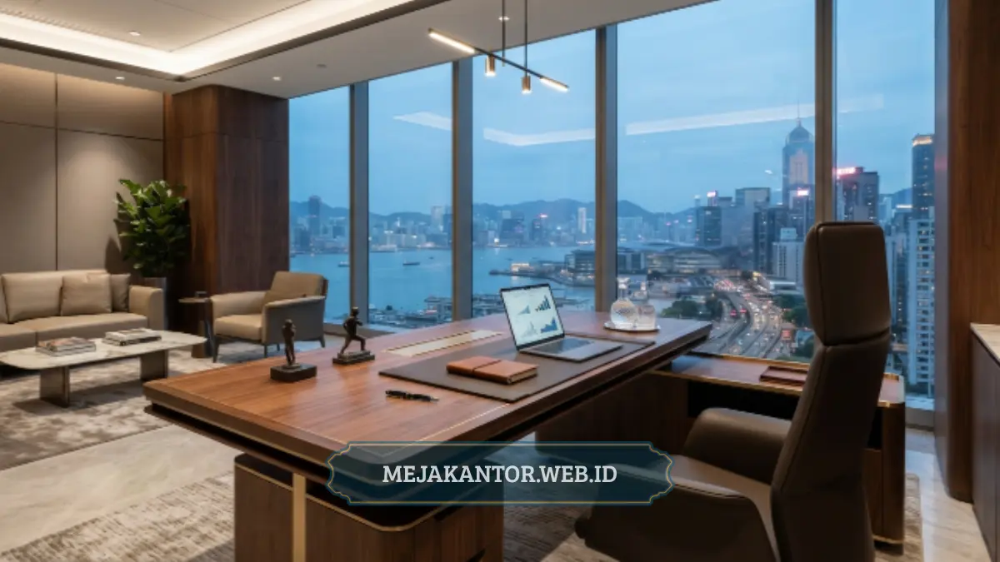

Desain meja direktur yang tepat memadukan kesan mewah dengan prinsip minimalis, mencakup pemilihan bentuk, material, dan penempatan yang efisien. Artikel ini merangkum 15 opsi tata letak yang bisa diterapkan sesuai luas ruangan dan kebutuhan citra perusahaan.
- Meja direktur berfungsi sebagai pusat identitas ruang kerja pimpinan sekaligus area kerja fungsional.
- Tata letak minimalis menonjolkan garis bersih, ruang kosong, dan material premium tanpa ornamen berlebihan.
- Pemilihan bentuk meja (L-shape, U-shape, floating desk) menentukan alur sirkulasi dan kesan ruang.
- Kombinasi meja dengan credenza, rak pajangan, dan area duduk tamu memperkuat fungsi ruang eksekutif.
- Material seperti kayu solid, veneer, dan kombinasi metal memberi kesan mewah yang tetap minimalis.
Daftar Isi Artikel
- Apa Itu Meja Direktur dan Mengapa Desainnya Penting?
- Apa Saja Faktor yang Menentukan Tata Letak Meja Direktur?
- Bagaimana 15 Desain Tata Letak Meja Direktur untuk Kantor Minimalis Modern?
- Material Apa yang Cocok untuk Meja Direktur Bergaya Minimalis?
- Apa Kesalahan Umum dalam Menata Meja Direktur?
- Bagaimana Memilih Tata Letak yang Sesuai dengan Ukuran Ruangan?
Apa Itu Meja Direktur dan Mengapa Desainnya Penting?
Meja direktur adalah furnitur utama di ruang kerja pimpinan yang berfungsi sebagai pusat kegiatan administratif sekaligus simbol otoritas dan citra perusahaan. Desain meja ini penting karena memengaruhi kesan pertama tamu atau klien saat memasuki ruang kerja eksekutif.
Bagi perusahaan, meja direktur bukan sekadar tempat bekerja. Bentuk, ukuran, dan material meja mencerminkan identitas brand, tingkat formalitas organisasi, serta standar kenyamanan kerja pimpinan. Pada kantor bergaya minimalis modern, meja direktur biasanya dirancang dengan garis tegas, warna netral, dan sedikit detail dekoratif, namun tetap menonjolkan kualitas material sebagai penanda kemewahan.
Selain fungsi estetika, tata letak meja direktur juga berpengaruh pada produktivitas. Penempatan yang memperhitungkan arah cahaya, jarak ke pintu masuk, serta akses ke area penyimpanan akan membuat aktivitas kerja sehari-hari lebih efisien. Oleh karena itu, perencanaan tata letak sebaiknya dilakukan sejak awal desain ruangan, bukan sekadar menyesuaikan furnitur yang sudah ada.
Apa Saja Faktor yang Menentukan Tata Letak Meja Direktur?
Tata letak meja direktur ditentukan oleh luas ruangan, posisi jendela dan pintu, kebutuhan privasi, serta alur tamu yang berkunjung ke ruang kerja tersebut.
Sebelum menentukan model tata letak, ada beberapa faktor teknis yang perlu dipertimbangkan secara berurutan:
- Luas Ruangan: Menjadi acuan utama. Ruangan berukuran kecil hingga sedang umumnya lebih cocok dengan meja berbentuk L atau meja lurus tanpa sayap tambahan, sementara ruangan luas dapat mengakomodasi meja U-shape lengkap dengan area diskusi.
- Posisi Bukaan: Posisi jendela dan pintu memengaruhi arah hadap meja. Idealnya, posisi duduk direktur tidak membelakangi pintu utama, sekaligus mendapat pencahayaan alami yang cukup tanpa silau langsung ke layar kerja.
- Kebutuhan Privasi: Menentukan apakah diperlukan partisi tambahan, backdrop dinding, atau credenza sebagai pembatas visual antara area kerja dan area menerima tamu.
- Alur Pergerakan Tamu dan Staf: Perlu direncanakan agar tidak mengganggu konsentrasi kerja, misalnya dengan menempatkan meja rapat kecil terpisah dari meja kerja utama.
Bagaimana 15 Desain Tata Letak Meja Direktur untuk Kantor Minimalis Modern?
Berikut adalah variasi tata letak meja direktur yang umum diterapkan pada kantor bergaya minimalis modern, disusun berdasarkan bentuk, penempatan, dan kombinasi furnitur pendukung:
- Meja lurus menghadap pintu dengan backdrop kayu minimalis: Cocok untuk ruangan kecil hingga sedang, memberi kesan rapi dan formal tanpa banyak elemen tambahan.
- Meja L-shape dengan sisi pendek menghadap jendela: Memberi ruang kerja lebih luas sekaligus memanfaatkan cahaya alami untuk area menulis atau membaca dokumen.
- Meja U-shape lengkap dengan area komputer terpisah: Digunakan pada ruangan luas untuk memisahkan zona kerja administratif dan zona presentasi.
- Floating desk minimalis tanpa kaki penuh: Memberi kesan ringan dan modern, cocok untuk gaya kantor kontemporer dengan sentuhan industrial.
- Meja direktur dengan credenza senada di belakang: Credenza berfungsi sebagai penyimpanan dokumen sekaligus memperkuat kesan set furnitur yang serasi.
- Tata letak island desk di tengah ruangan: Meja diposisikan sebagai pusat ruangan, dikelilingi ruang gerak bebas, memberi kesan luas dan terbuka.
- Meja dengan sekat kaca transparan sebagai pembatas ruang tamu: Menjaga privasi kerja tanpa membuat ruangan terasa sempit atau tertutup penuh.
- Kombinasi meja kayu solid dengan kaki metal minimalis: Memberi kontras material yang tetap terkesan mewah namun sederhana.
- Meja direktur menghadap dinding aksen gelap: Warna dinding gelap di belakang kursi memberi kesan tegas dan berwibawa.
- Tata letak dengan meja kerja dan meja rapat kecil terpisah: Memungkinkan diskusi singkat tanpa berpindah ruangan, cocok untuk direktur dengan agenda rapat internal yang padat.
- Meja direktur dengan rak pajangan terbuka di sisi kanan: Digunakan untuk memamerkan penghargaan, buku, atau dokumentasi perusahaan secara rapi.
- Meja minimalis dengan laci tersembunyi tanpa pegangan mencolok: Menonjolkan garis bersih tanpa mengorbankan fungsi penyimpanan.
- Tata letak dengan sofa tamu kecil di sudut ruangan: Memisahkan zona kerja formal dan zona diskusi informal dengan tamu.
- Meja direktur menghadap taman dalam ruangan atau elemen hijau: Memberi nuansa segar sekaligus tetap mempertahankan kesan profesional.
- Meja modular yang dapat disesuaikan konfigurasinya: Memberi fleksibilitas apabila ruangan direnovasi atau fungsi ruang berubah di kemudian hari.
Kelima belas tata letak ini dapat dikombinasikan sesuai kebutuhan spesifik ruangan, tanpa harus mengikuti satu pola secara kaku.

Material Apa yang Cocok untuk Meja Direktur Bergaya Minimalis?
Material yang umum digunakan untuk meja direktur minimalis meliputi kayu solid, veneer kayu, kombinasi metal, dan permukaan laminasi berkualitas tinggi.
Kayu solid seperti jati atau mahoni memberi kesan mewah alami dan daya tahan tinggi, meski umumnya memiliki bobot lebih berat dan harga lebih tinggi dibanding material lain. Veneer kayu menjadi alternatif yang lebih ringan dan ekonomis, namun tetap menampilkan tekstur serat kayu asli pada lapisan permukaannya.
Kombinasi metal, terutama pada bagian kaki meja, sering dipilih untuk memperkuat kesan industrial-modern sekaligus menambah kekokohan struktur. Sementara itu, permukaan laminasi (HPL) berkualitas tinggi menawarkan ketahanan terhadap goresan dan noda, cocok untuk kantor dengan aktivitas kerja intensif.
Pemilihan material sebaiknya juga mempertimbangkan perawatan jangka panjang. Material alami seperti kayu solid memerlukan perawatan berkala agar warna dan teksturnya tetap terjaga, sedangkan material laminasi cenderung lebih mudah dibersihkan dan dirawat tanpa perlakuan khusus.
Apa Kesalahan Umum dalam Menata Meja Direktur?
Kesalahan umum dalam menata meja direktur meliputi penempatan yang membelakangi pintu, pemilihan ukuran meja yang tidak proporsional dengan luas ruangan, serta pengabaian sirkulasi udara dan cahaya.
Salah satu kesalahan yang sering ditemui adalah menempatkan meja terlalu dekat dengan dinding tanpa mempertimbangkan ruang gerak di belakang kursi, sehingga aktivitas kerja terasa sempit dan tidak nyaman. Kesalahan lain adalah memilih meja berukuran besar untuk ruangan sempit, yang justru membuat ruangan terlihat penuh dan sulit dilalui.
Pengabaian terhadap arah cahaya juga sering terjadi, misalnya menempatkan layar komputer menghadap langsung ke jendela sehingga menimbulkan silau. Selain itu, banyak ruang kerja direktur yang kurang memperhatikan sirkulasi udara karena furnitur tambahan diletakkan terlalu rapat, sehingga mengurangi kenyamanan jangka panjang.
Menurut data internal industri furnitur perkantoran, permintaan terhadap meja direktur dengan desain minimalis dan multifungsi menunjukkan tren peningkatan pada periode 2024-2026 seiring pergeseran preferensi kantor menuju konsep ruang kerja yang lebih efisien dan fleksibel.
Bagaimana Memilih Tata Letak yang Sesuai dengan Ukuran Ruangan?
Pemilihan tata letak meja direktur sebaiknya disesuaikan dengan luas ruangan yang tersedia, mulai dari ruangan kecil dengan meja lurus hingga ruangan luas dengan konfigurasi U-shape lengkap.
Untuk ruangan berukuran kecil, sebaiknya dipilih meja dengan bentuk sederhana seperti meja lurus atau L-shape ringkas, tanpa penambahan credenza besar yang memakan ruang gerak. Ruangan berukuran sedang dapat mengakomodasi kombinasi meja L-shape dengan credenza kecil atau rak pajangan.
Sementara itu, ruangan berukuran luas memberi keleluasaan untuk menerapkan tata letak U-shape, island desk, atau kombinasi meja kerja dengan area duduk tamu terpisah. Pada ruangan luas, penting untuk tetap menjaga proporsi agar meja tidak terlihat kecil dan tenggelam di tengah ruangan kosong.
Desain dan tata letak meja direktur yang tepat mempertimbangkan luas ruangan, arah cahaya, material, serta fungsi tambahan seperti credenza atau area diskusi. Kantor bergaya minimalis modern dapat tetap terkesan mewah melalui pemilihan material berkualitas dan garis desain yang bersih, tanpa perlu ornamen berlebihan. Sebelum menentukan tata letak akhir, sebaiknya ukur terlebih dahulu dimensi ruangan dan sesuaikan dengan salah satu dari 15 opsi tata letak di atas agar hasil akhir proporsional dan fungsional.
Konsultasikan Pengadaan Meja Direktur Anda
Dapatkan rekomendasi layout 3D, pilihan material premium, dan penawaran harga B2B terbaik khusus untuk kantor Anda.
Konsultasi via WhatsApp 0889-8964-3555
Mega Anggun
Penulis Konten & Spesialis Penataan Interior Kantor. Berpengalaman dalam memberikan tips ergonomi dan memilih furnitur terbaik untuk menunjang produktivitas kerja.